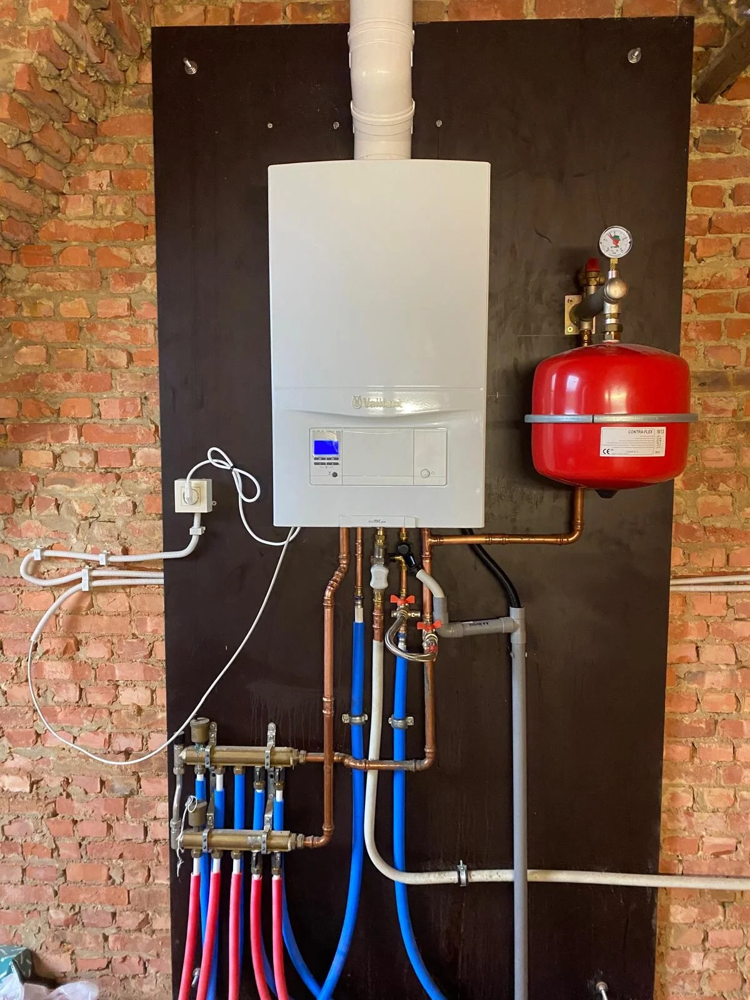

Spoed? Bel ons
+32 486 23 57 17
Vraag offerte aan
Uw partner voor betrouwbare en professionele installatie- en onderhoudsdiensten in België.
Sadico is opgericht met de bedoeling om betrouwbare en professionele installatie- en onderhoudsdiensten te bieden in België. Het bedrijf is ontstaan uit de passie voor vakmanschap en de wens om klanten te voorzien van de beste service voor sanitair, verwarming en waterinstallaties.
De naam Sadico staat voor kwaliteit, betrouwbaarheid en persoonlijke service, waarden die het bedrijf dagelijks uitdraagt in zijn werk.
Sadico is uniek in Antwerpen doordat we kwalitatieve service bieden tegen betaalbare prijzen. We onderscheiden ons door 24/7 beschikbaarheid, persoonlijke aanpak en maatwerkoplossingen voor elke klant. Wij zijn geen dure optie, maar zorgen wel voor betrouwbaarheid en hoogwaardige afwerking zonder onnodige kosten.


Deze vier pijlers vormen het fundament van elk project dat wij uitvoeren.
We zijn altijd op tijd en houden ons aan onze afspraken, zodat klanten op ons kunnen rekenen. Uw gemoedsrust is onze prioriteit.
We leveren altijd topkwaliteit, zowel in de materialen die we gebruiken als in de uiterst precieze afwerking van onze projecten.
We bieden eerlijke prijzen en transparante offertes. U geniet van vakmanschap zonder in te boeten op de kwaliteit van ons werk.
We luisteren aandachtig naar de wensen van onze klanten en zorgen voor op maat gemaakte oplossingen die perfect aansluiten bij hun behoeften.